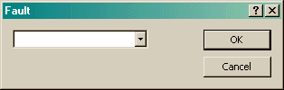

The Fault dialog allows you to create or edit a specific fault that occurred in this run.

All faults that are currently configured, plus any that you may have entered, are listed. You may also type any value you want into the field.